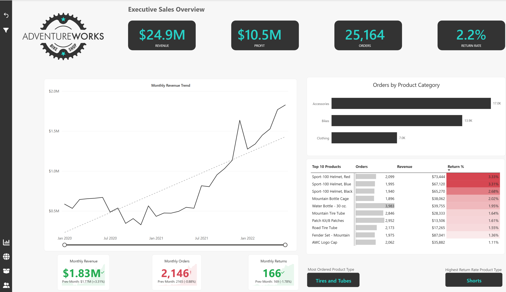
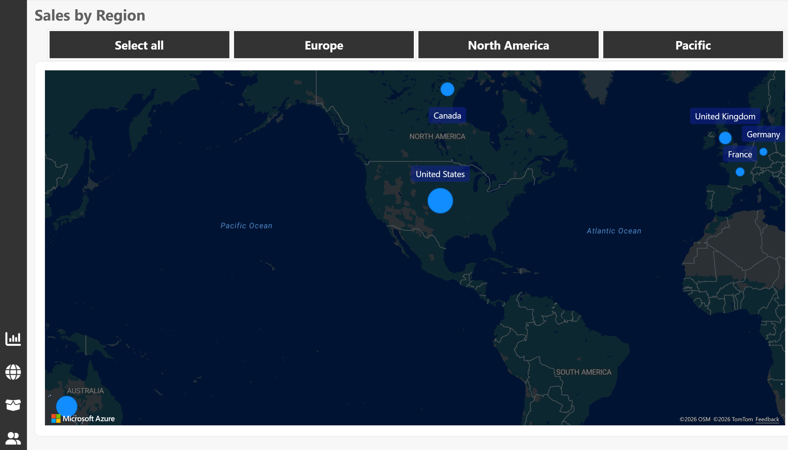
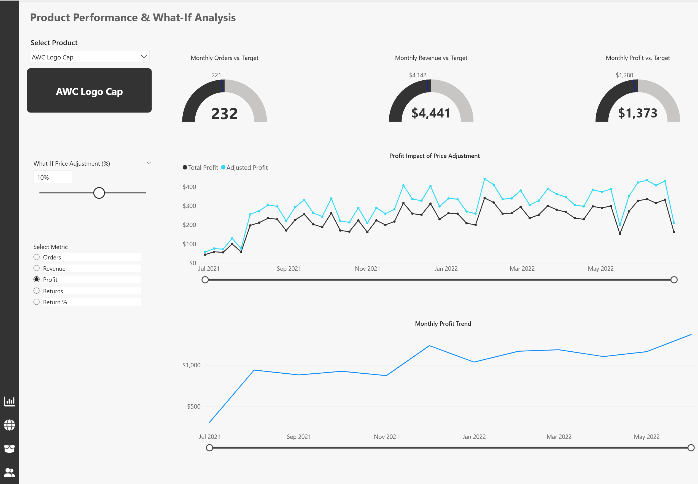
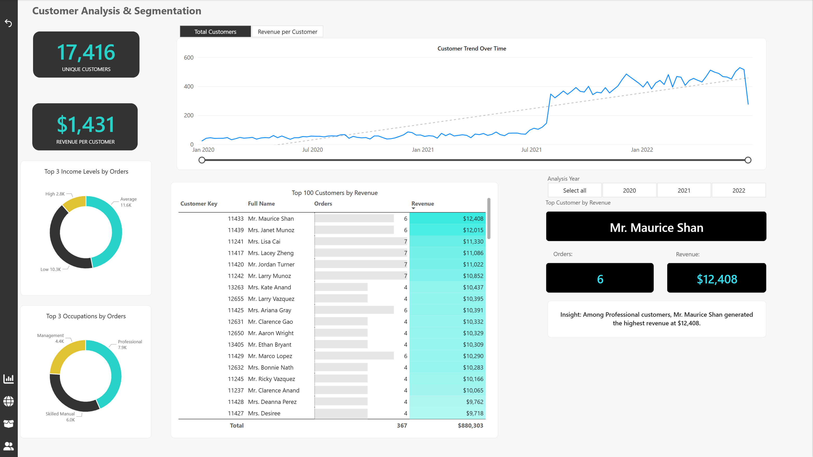
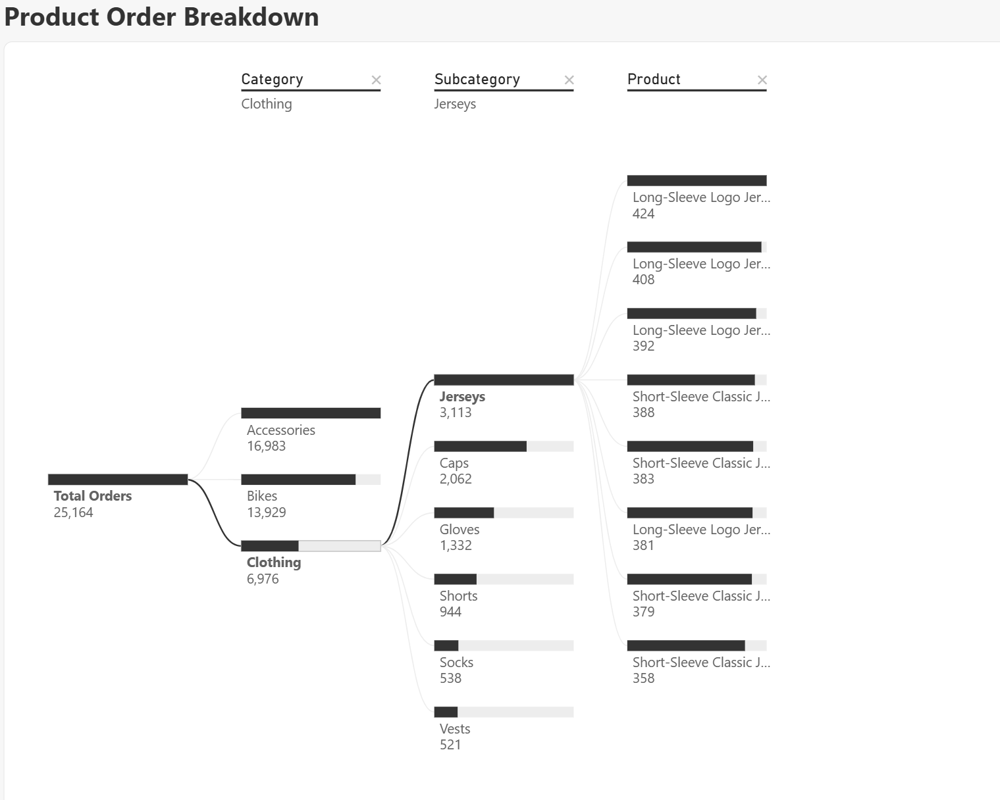
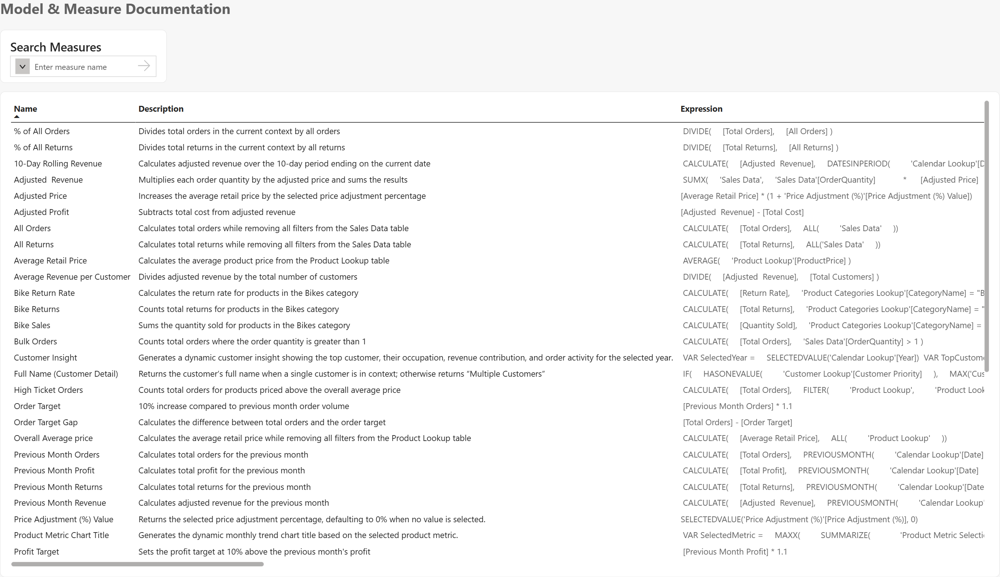

An end-to-end Power BI solution designed to analyze sales performance, customer behaviour, product performance, geographic trends and business drivers. The report combines interactive dashboards, DAX measures, what-if analysis, dynamic metric selection and model documentation to support data-driven decision-making.
The goal of this project was to build an interactive business intelligence solution that gives decision-makers a clear view of overall sales performance while allowing deeper investigation into products, customers and regional performance.
Track revenue, profit, orders and returns while comparing recent performance with historical trends and business targets.
Understand customer activity, identify high-value customers and explore customer segments using income, occupation and revenue contribution.
Enable users to explore product performance, regional patterns and pricing scenarios through interactive Power BI features.
The executive dashboard provides a high-level view of business performance, combining headline KPIs with monthly trends, product category performance, return analysis and product-level results.

The dashboard consolidates overall revenue performance into a prominent executive KPI for rapid business assessment.
Profit is monitored alongside revenue to provide a clearer picture of overall commercial performance.
Order activity provides additional context for interpreting revenue, product demand and customer purchasing behaviour.
The regional analysis uses an interactive map to compare sales activity across AdventureWorks markets, including North America, Europe and the Pacific region.
Region controls allow users to focus the analysis on a specific market while maintaining an intuitive geographic view of the business.

The product analysis page moves beyond descriptive reporting by combining product selection, monthly targets, dynamic metric analysis and a pricing what-if scenario.

Monthly orders, revenue and profit are compared with target values, giving users an immediate view of current product performance relative to expected results.
A Power BI what-if parameter allows users to simulate price adjustments and observe how the selected percentage affects adjusted profit over time.
Users can switch the monthly trend between Orders, Revenue, Profit, Returns and Return %, allowing one visual to answer multiple analytical questions.
DAX-driven titles automatically reflect the metric selected by the user, improving report clarity and creating a more intuitive interactive experience.

The customer page examines the size, value and composition of the customer base while identifying high-value customers and changes in customer activity over time.
A decomposition tree provides an exploratory view of total orders, allowing users to move from the overall result through product category, subcategory and individual products.

Users can compare order contribution across major product categories such as Accessories, Bikes and Clothing.
Each category can be expanded to expose the subcategories driving order volume.
The final level enables detailed investigation of individual products and their contribution to overall orders.
The report includes a dedicated documentation page that makes the analytical logic more transparent by presenting measure names, descriptions and DAX expressions directly within the Power BI solution.
Measures documented include adjusted revenue, adjusted profit, previous-month calculations, targets, customer insights, return metrics and the dynamic product metric chart title.
This improves maintainability and demonstrates that the project was designed not only for presentation, but also with model governance and future users in mind.

The project combines data modeling, DAX and interactive visualization techniques to create a report that supports both executive monitoring and detailed exploratory analysis.
Lookup and transactional tables were organized into a structured analytical model to support filtering and consistent calculations across report pages.
Measures were created for revenue, profit, orders, returns, previous-month performance, targets, adjusted pricing and customer analysis.
Slicers, dynamic metric selection, map controls, decomposition analysis and what-if parameters allow users to investigate the business from multiple perspectives.
Consistent navigation, visual hierarchy, dynamic titles and dedicated analytical pages help users move from summary-level information to detailed analysis.
The executive trend shows substantially stronger monthly revenue performance in the later part of the reporting period compared with the earlier months.
Accessories accounted for approximately 17K orders, ahead of Bikes at approximately 13.9K and Clothing at approximately 7K.
The executive product table highlights differences in return rates across products, making returns an important complement to revenue and order analysis.
The customer analysis identifies high-value customers and provides a structured way to compare their revenue contribution and order activity.